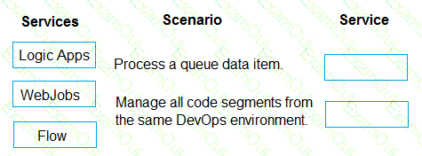
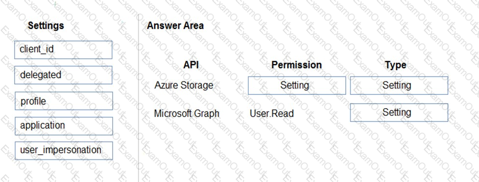
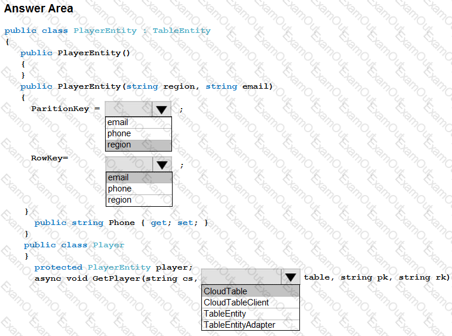
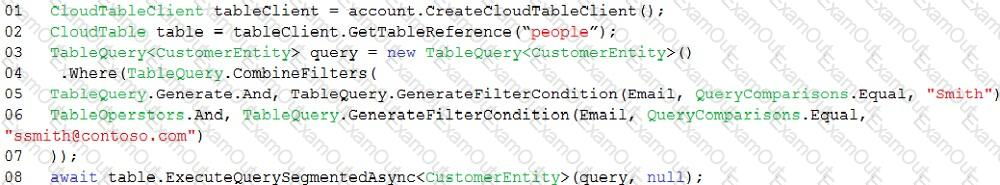

Microsoft - AZ-204
For each of the following statements, select Yes if the statement is true. Otherwise, select No.
NOTE: Each correct selection is worth one point.
Answer:
Explanation
70 of 272

Microsoft - AZ-204
Many-to-many relationships without an entity class to represent the join table are not yet supported. However,
you can represent a many-to-many relationship by including an entity class for the join table and mapping two
separate one-to-many relationships.
protected override void OnModelCreating(ModelBuilder modelBuilder)
{
modelBuilder.Entity<PostTag>()
HasKey(t => new { t.PostId, t.TagId });
modelBuilder.Entity<PostTag>()
HasOne(pt => pt.Post)
WithMany(p => p.PostTags)
HasForeignKey(pt => pt.PostId);
modelBuilder.Entity<PostTag>()
HasOne(pt => pt.Tag)
WithMany(t => t.PostTags)
HasForeignKey(pt => pt.TagId);
}
}
Question #:20 - (Exam Topic 3)
You are developing a solution that will use Azure messaging services.
You need to ensure that the solution uses a publish-subscribe model and eliminates the need for constant
polling.
What are two possible ways to achieve the goal? Each correct answer presents a complete solution.
NOTE: Each correct selection is worth one point.
A. Service Bus
B. Event Hub
C. Event Grid
D. Queue
71 of 272

Microsoft - AZ-204
Answer: A C
Explanation
It is strongly recommended to use available messaging products and services that support a publish-subscribe
model, rather than building your own. In Azure, consider using Service Bus or Event Grid. Other technologies
that can be used for pub/sub messaging include Redis, RabbitMQ, and Apache Kafka.
Reference:
https://docs.microsoft.com/en-us/azure/architecture/patterns/publisher-subscriber
Question #:21 - (Exam Topic 3)
You have an application that provides weather forecasting data to external partners. You use Azure API
Management to publish APIs.
You must change the behavior of the API to meet the following requirements:
• Support alternative input parameters.
• Remove formatting text from responses.
• Provide additional context to back-end services.
Which types of policies should you implement? To answer, drag the policy types to the correct scenarios. Each
policy type may be used once, more than once, or not at all. You may need to drag the split bar between panes
or scroll to view content
NOTE: Each correct selection is worth one point.
Answer:
72 of 272

Microsoft - AZ-204
Explanation
Question #:22 - (Exam Topic 3)
Note: This question is part of a series of questions that present the same scenario. Each question in the series
contains a unique solution that might meet the stated goals. Some question sets might have more than one
correct solution, while others might not have a correct solution.
After you answer a question in this section, you will NOT be able to return to it. As a result, these questions
will not appear in the review screen.
You develop a software as a service (SaaS) offering to manage photographs. Users upload photos to a web
service which then stores the photos in Azure Storage Blob storage. The storage account type is
General-purpose V2.
When photos are uploaded, they must be processed to produce and save a mobile-friendly version of the
image. The process to produce a mobile-friendly version of the image must start in less than one minute.
You need to design the process that starts the photo processing.
Solution: Trigger the photo processing from Blob storage events.
Does the solution meet the goal?
A. Yes
B. NO
73 of 272

Microsoft - AZ-204
Answer: B
Explanation
You need to catch the triggered event, so move the photo processing to an Azure Function triggered from the
blob upload
Note: Azure Storage events allow applications to react to events. Common Blob storage event scenarios
include image or video processing, search indexing, or any file-oriented workflow.
Events are pushed using Azure Event Grid to subscribers such as Azure Functions, Azure Logic Apps, or even
to your own http listener.
Note: Only storage accounts of kind StorageV2 (general purpose v2) and BlobStorage support event
integration. Storage (general purpose v1) does not support integration with Event Grid.
Reference:
https://docs.microsoft.com/en-us/azure/storage/blobs/storage-blob-event-overview
Question #:23 - (Exam Topic 3)
You must ensure that the external party cannot access the data in the SSN column of the Person table.
Will each protection method meet the requirement? To answer, drag the appropriate responses to the correct
protection methods. Each response may be used once, more than once, or not at all. You may need to drag the
split bar between panes or scroll to view content.
NOTE: Each correct selection is worth one point.
Answer:
74 of 272

Microsoft - AZ-204
Explanation
Box 1: Yes
You can configure Always Encrypted for individual database columns containing your sensitive data. When
setting up encryption for a column, you specify the information about the encryption algorithm and
cryptographic keys used to protect the data in the column.
Box 2: No
Box 3: Yes
In SQL Database, the VIEW permissions are not granted by default to the public fixed database role. This
enables certain existing, legacy tools (using older versions of DacFx) to work properly. Consequently, to work
with encrypted columns (even if not decrypting them) a database administrator must explicitly grant the two
VIEW permissions.
Box 4: No
All cryptographic keys are stored in an Azure Key Vault.
References:
75 of 272

Microsoft - AZ-204
https://docs.microsoft.com/en-us/sql/relational-databases/security/encryption/always-encrypted-database-engine
Question #:24 - (Exam Topic 3)
You are developing an Azure Function App by using Visual Studio. The app will process orders input by an
Azure Web App. The web app places the order information into Azure Queue Storage.
You need to review the Azure Function App code shown below.
NOTE: Each correct selection is worth one point.
Answer:
76 of 272

Microsoft - AZ-204
Explanation
Box 1: No
ExpirationTime - The time that the message expires.
InsertionTime - The time that the message was added to the queue.
Box 2: Yes
maxDequeueCount - The number of times to try processing a message before moving it to the poison queue.
77 of 272

Microsoft - AZ-204
Default value is 5.
Box 3: Yes
When there are multiple queue messages waiting, the queue trigger retrieves a batch of messages and invokes
function instances concurrently to process them. By default, the batch size is 16. When the number being
processed gets down to 8, the runtime gets another batch and starts processing those messages. So the
maximum number of concurrent messages being processed per function on one virtual machine (VM) is 24.
Box 4: Yes
References:
https://docs.microsoft.com/en-us/azure/azure-functions/functions-bindings-storage-queue
Question #:25 - (Exam Topic 3)
You have an Azure App Services Web App. Azure SQL Database instance. Azure Storage Account and an
Azure Redis Cache instance in a resource group.
A developer must be able to publish code to the web app. You must grant the developer the Contribute role to
the web app
You need to grant the role.
What two commands can you use? Each correct answer presents a complete solution.
NOTE: Each correct selection is worth one point.
A. New-AzureRmRoleAssignment
B. az role assignment create
C. az role definition create
D. New-AzureRmRoleDefinition
Answer: A B
Explanation
References:
https://docs.microsoft.com/en-us/cli/azure/role/assignment?view=azure-cli-latest#az-role-assignment-create
https://docs.microsoft.com/en-us/powershell/module/azurerm.resources/new-azurermroleassignment?view=azurermps-6.13.0
Question #:26 - (Exam Topic 3)
78 of 272

Microsoft - AZ-204
Note: This question is part of a series of questions that present the same scenario. Each question in the series
contains a unique solution that might meet the stated goals. Some question sets might have more than one
correct solution, while others might not have a correct solution.
After you answer a question in this section, you will NOT be able to return to it. As a result, these questions
will not appear in the review screen.
Margie's Travel is an international travel and bookings management service. The company is expanding into
restaurant bookings. You are tasked with implementing Azure Search tor the restaurants listed in their
solution.
You create the index in Azure Search.
You need to import the restaurant data into the Azure Search service by using the Azure Search NET SDK.
Solution:
1. Create a SearchServiceClient object to connect to the search index.
2. Create a DataContainer that contains the documents which must be added.
3. Create a DataSource instance and set its Container property to the DataContainer.
4. Set the DataSource property of the SearchServiceCIient
Does the solution meet the goal?
A. Yes
B. No
Answer: B
Explanation
Use the following method:
1.Create a SearchIndexClient object to connect to the search index
2.Create an IndexBatch that contains the documents which must be added.
3.Call the Documents.Index method of the SearchIndexClient and pass the IndexBatch.
References:
https://docs.microsoft.com/en-us/azure/search/search-howto-dotnet-sdk
Question #:27 - (Exam Topic 3)
You are configuring a development environment for your team. You deploy the latest Visual Studio image
79 of 272

Microsoft - AZ-204
from the Azure Marketplace to your Azure subscription.
The development environment requires several software development kits (SDKs) and third-party components
to support application development across the organization. You install and customize the deployed virtual
machine (VM) for your development team. The customized VM must be saved to allow provisioning of a new
team member development environment.
You need to save the customized VM for future provisioning.
Which tools or services should you use? To answer, select the appropriate options in the answer area.
NOTE: Each correct selection is worth one point.
Answer:
Explanation
80 of 272

Microsoft - AZ-204
Box 1: Azure Powershell
Creating an image directly from the VM ensures that the image includes all of the disks associated with the
VM, including the OS disk and any data disks.
Before you begin, make sure that you have the latest version of the Azure PowerShell module.
You use Sysprep to generalize the virtual machine, then use Azure PowerShell to create the image.
Box 2: Azure Blob Storage
References:
https://docs.microsoft.com/en-us/azure/virtual-machines/windows/capture-image-resource#create-an-image-of-a-vm-using-powershell
Question #:28 - (Exam Topic 3)
A company is developing a Node.js web app. The web app code is hosted in a GitHub repository located at
https://github.com/TailSpinToys/weapp.
The web app must be reviewed before it is moved to production. You must deploy the initial code release to a
deployment slot named review.
You need to create the web app and deploy the code.
How should you complete the commands? To answer, select the appropriate options in the answer area.
81 of 272

Microsoft - AZ-204
NOTE: Each correct selection is worth one point.
Answer:
82 of 272

Microsoft - AZ-204
Explanation
83 of 272

Microsoft - AZ-204
The New-AzResourceGroup cmdlet creates an Azure resource group.
The New-AzAppServicePlan cmdlet creates an Azure App Service plan in a given location
The New-AzWebApp cmdlet creates an Azure Web App in a given a resource group
The New-AzWebAppSlot cmdlet creates an Azure Web App slot.
References:
https://docs.microsoft.com/en-us/powershell/module/az.resources/new-azresourcegroup?view=azps-2.3.2
https://docs.microsoft.com/en-us/powershell/module/az.websites/new-azappserviceplan?view=azps-2.3.2
https://docs.microsoft.com/en-us/powershell/module/az.websites/new-azwebapp?view=azps-2.3.2
https://docs.microsoft.com/en-us/powershell/module/az.websites/new-azwebappslot?view=azps-2.3.2
Question #:29 - (Exam Topic 3)
84 of 272


Microsoft - AZ-204
You develop an app that allows users to upload photos and videos to Azure storage. The app uses a storage
REST API call to upload the media to a blob storage account named Account1. You have blob storage
containers named Container1 and Container2.
Uploading of videos occurs on an irregular basis.
You need to copy specific blobs from Container1 to Container2 in real time when specific requirements are
met, excluding backup blob copies.
What should you do?
A. Download the blob to a virtual machine and then upload the blob to Container2.
B. Run the Azure PowerShell command Start-AzureStorageBlobCopy.
C. Copy blobs to Container2 by using the Put Blob operation of the Blob Service REST API.
D. Use AzCopy with the Snapshot switch blobs to Container2.
Answer: B
Explanation
The Start-AzureStorageBlobCopy cmdlet starts to copy a blob.
Example 1: Copy a named blob
C:\PS>Start-AzureStorageBlobCopy -SrcBlob "ContosoPlanning2015" -DestContainer "ContosoArchives"
-SrcContainer "ContosoUploads"
This command starts the copy operation of the blob named ContosoPlanning2015 from the container named
ContosoUploads to the container named ContosoArchives.
References:
https://docs.microsoft.com/en-us/powershell/module/azure.storage/start-azurestorageblobcopy?view=azurermps-6.13.0
Question #:30 - (Exam Topic 3)
You are implementing a software as a service (SaaS) ASP.NET Core web service that will run as an Azure
Web App. The web service will use an on-premises SQL Server database for storage. The web service also
includes a WebJob that processes data updates. Four customers will use the web service.
Each instance of the WebJob processes data for a single customer and must run as a singleton instance.
Each deployment must be tested by using deployment slots prior to serving production data.
Azure costs must be minimized.
85 of 272


Microsoft - AZ-204
Azure resources must be located in an isolated network.
You need to configure the App Service plan for the Web App.
How should you configure the App Service plan? To answer, select the appropriate settings in the answer area.
NOTE: Each correct selection is worth one point.
Answer:
86 of 272

Microsoft - AZ-204
Explanation
Number of VM instances: 4
You are not charged extra for deployment slots.
Pricing tier: Isolated
The App Service Environment (ASE) is a powerful feature offering of the Azure App Service that gives
network isolation and improved scale capabilities. It is essentially a deployment of the Azure App Service into
a subnet of a customer’s Azure Virtual Network (VNet).
References:
https://azure.microsoft.com/sv-se/blog/announcing-app-service-isolated-more-power-scale-and-ease-of-use/
Question #:31 - (Exam Topic 3)
You are developing a .NET Core model-view controller (MVC) application hosted on Azure for a health care
system that allows providers access to their information.
You develop the following code:
87 of 272


Microsoft - AZ-204
You define a role named SysAdmin.
You need to ensure that the application meets the following authorization requirements:
Allow the ProviderAdmin and SysAdmin roles access to the Partner controller regardless of whether the
user holds an editor claim of partner.
Limit access to the Manage action of the controller to users with an editor claim of partner who are also
members of the SysAdmin role.
How should you complete the code? To answer, drag the appropriate code segments to the correct locations.
Each code segment may be used once, more than once, or not at all. You may need to drag the split bar
between panes or scroll to view content.
NOTE: Each correct selection is worth one point.
Answer:
Explanation
88 of 272

Microsoft - AZ-204
Box 1:
Allow the ProviderAdmin and SysAdmin roles access to the Partner controller regardless of whether the user
holds an editor claim of partner.
Box 2:
Limit access to the Manage action of the controller to users with an editor claim of partner who are also
members of the SysAdmin role.
Question #:32 - (Exam Topic 3)
You are developing a new page for a website that uses Azure Cosmos DB for data storage. The feature uses
documents that have the following format:
You must display data for the new page in a specific order. You create the following query for the page:
You need to configure a Cosmos DB policy to the support the query.
How should you configure the policy? To answer, drag the appropriate JSON segments to the correct
locations. Each JSON segment may be used once, more than once, or not at all. You may need to drag the split
bar between panes or scroll to view content.
NOTE: Each correct selection is worth one point.
89 of 272

Microsoft - AZ-204
Answer:
90 of 272

Microsoft - AZ-204
Explanation
91 of 272

Microsoft - AZ-204
Box 1: compositeIndexes
You can order by multiple properties. A query that orders by multiple properties requires a composite index.
Box 2: descending
Example: Composite index defined for (name ASC, age ASC):
It is optional to specify the order. If not specified, the order is ascending.
{
"automatic":true,
"indexingMode":"Consistent",
"includedPaths":[
{
"path":"/*"
}
],
92 of 272

Microsoft - AZ-204
"excludedPaths":[],
"compositeIndexes":[
[
{
"path":"/name",
},
{
"path":"/age",
}
]
]
}
Question #:33 - (Exam Topic 3)
You develop a gateway solution for a public facing news API.
The news API back end is implemented as a RESTful sen/ice and hosted in an Azure App Service instance.
You need to configure back-end authentication for the API Management service instance.
Which target and gateway credential type should you use? To answer, drag the appropriate values to the
correct parameters. Each value may be used once, more than once, or not at all. You may need to drag the split
bar between panes or scroll to view content.
NOTE: Each correct selection is worth one point.
Answer:
93 of 272

Microsoft - AZ-204
Explanation
Box 1: Azure Resource
Box 2: Client cert
API Management allows to secure access to the back-end service of an API using client certificates.
References:
https://docs.microsoft.com/en-us/rest/api/apimanagement/apimanagementrest/azure-api-management-rest-api-backend-entity
Question #:34 - (Exam Topic 3)
You have a web app named MainApp. You are developing a triggered App Service background task by using
the WebJobs SDK. This task automatically invokes a function code whenever any new data is received in a
queue.
You need to configure the services.
Which service should you use for each scenario? To answer, drag the appropriate services to the correct
scenarios. Each service may be used once, more than once, or not at all. You may need to drag the split bar
between panes or scroll to view content.
NOTE: Each correct selection is worth one point.
94 of 272


Microsoft - AZ-204
Answer:
Explanation
Box 1: WebJobs
A WebJob is a simple way to set up a background job, which can process continuously or on a schedule.
WebJobs differ from a cloud service as it gives you get less fine-grained control over your processing
environment, making it a more true PaaS service.
Box 2: Flow
Question #:35 - (Exam Topic 3)
You are deploying an Azure Kubernetes Services (AKS) cluster that will use multiple containers.
You need to create the cluster and verify that the services for the containers are configured correctly and
available.
95 of 272

Microsoft - AZ-204
Which four commands should you use to develop the solution? To answer, move the appropriate command
segments from the list of command segments to the answer area and arrange them in the correct order.
Answer:
Explanation
96 of 272

Microsoft - AZ-204
Step 1: az group create
Create a resource group with the az group create command. An Azure resource group is a logical group in
which Azure resources are deployed and managed.
Example: The following example creates a resource group named myAKSCluster in the eastus location.
az group create --name myAKSCluster --location eastus
Step 2 : az aks create
Use the az aks create command to create an AKS cluster.
Step 3: kubectl apply
To deploy your application, use the kubectl apply command. This command parses the manifest file and
creates the defined Kubernetes objects.
Step 4: az aks get-credentials
Configure it with the credentials for the new AKS cluster. Example:
az aks get-credentials --name aks-cluster --resource-group aks-resource-group
References:
https://docs.bitnami.com/azure/get-started-aks/
Question #:36 - (Exam Topic 3)
Note: This question is part of a series of questions that present the same scenario. Each question in the
series contains a unique solution that might meet the stated goals. Some question sets might have more
than one correct solution, while others might not have a correct solution.
After you answer a question in this section, you will NOT be able to return to it. As a result, these
questions will not appear in the review screen.
You are developing an Azure solution to collect point-of-sale (POS) device data from 2,000 stores located
97 of 272

Microsoft - AZ-204
throughout the world. A single device can produce 2 megabytes (MB) of data every 24 hours. Each store
location has one to five devices that send data.
You must store the device data in Azure Blob storage. Device data must be correlated based on a device
identifier. Additional stores are expected to open in the future.
You need to implement a solution to receive the device data.
Solution: Provision an Azure Service Bus. Configure a topic to receive the device data by using a correlation
filter.
Does the solution meet the goal?
A. Yes
B. No
Answer: A
Explanation
A message is raw data produced by a service to be consumed or stored elsewhere. The Service Bus is for
high-value enterprise messaging, and is used for order processing and financial transactions.
Reference:
https://docs.microsoft.com/en-us/azure/event-grid/compare-messaging-services
Question #:37 - (Exam Topic 3)
You are developing an ASP.NET Core website that can be used to manage photographs which are stored in
Azure Blob Storage containers.
Users of the website authenticate by using their Azure Active Directory (Azure AD) credentials.
You implement role-based access control (RBAC) role permission on the containers that store photographs.
You assign users to RBAC role.
You need to configure the website’s Azure AD Application so that user’s permissions can be used with the
Azure Blob containers.
How should you configure the application? To answer, drag the appropriate setting to the correct location.
Each setting may be used once, more than once, or not at all. You may need to drag the split bar between
panes or scroll to view content.
NOTE: Each correct selection is worth one point.
98 of 272


Microsoft - AZ-204
Answer:
Explanation
99 of 272

Microsoft - AZ-204
Box 1: user_impersonation
Box 2: delegated
Example:
1.Select the API permissions section
2.Click the Add a permission button and then:
Ensure that the My APIs tab is selected
3.In the list of APIs, select the API TodoListService-aspnetcore.
4.In the Delegated permissions section, ensure that the right permissions are checked: user_impersonation.
5.Select the Add permissions button.
Box 3: delegated
Example
1.Select the API permissions section
2.Click the Add a permission button and then,
Ensure that the Microsoft APIs tab is selected
3.In the Commonly used Microsoft APIs section, click on Microsoft Graph
4.In the Delegated permissions section, ensure that the right permissions are checked: User.Read. Use the
search box if necessary.
5.Select the Add permissions button
References:
100 of 272

Microsoft - AZ-204
https://docs.microsoft.com/en-us/samples/azure-samples/active-directory-dotnet-webapp-webapi-openidconnect-aspnetcore/calling-a-web-api-in-an-aspnet-core-web-application-using-azure-ad/
Question #:38 - (Exam Topic 3)
A company is developing a solution that allows smart refrigerators to send temperature information to a
central location. You have an existing Service Bus.
The solution must receive and store messages until they can be processed. You create an Azure Service Bus
instance by providing a name, pricing tier, subscription, resource group, and location.
You need to complete the configuration.
Which Azure CLI or PowerShell command should you run?
A. Option A
B. Option B
C. Option C
D. Option D
Answer: B
Explanation
A service bus instance has already been created (Step 2 below). Next is step 3, Create a Service Bus queue.
101 of 272

Microsoft - AZ-204
Note:
Steps:
Step 1: # Create a resource group
resourceGroupName="myResourceGroup"
az group create --name $resourceGroupName --location eastus
Step 2: # Create a Service Bus messaging namespace with a unique name
namespaceName=myNameSpace$RANDOM
az servicebus namespace create --resource-group $resourceGroupName --name $namespaceName --location
eastus
Step 3: # Create a Service Bus queue
az servicebus queue create --resource-group $resourceGroupName --namespace-name $namespaceName
--name BasicQueue
Step 4: # Get the connection string for the namespace
connectionString=$(az servicebus namespace authorization-rule keys list --resource-group
$resourceGroupName --namespace-name $namespaceName --name RootManageSharedAccessKey --query
primaryConnectionString --output tsv)
References:
https://docs.microsoft.com/en-us/azure/service-bus-messaging/service-bus-quickstart-cli
Question #:39 - (Exam Topic 3)
You develop a web application.
You need to register the application with an active Azure Active Directory (Azure AD) tenant.
Which three actions should you perform in sequence? To answer, move all actions from the list of actions to
the answer area and arrange them in the correct order.
102 of 272

Microsoft - AZ-204
Answer:
103 of 272


Microsoft - AZ-204
Explanation
Register a new application using the Azure portal
Sign in to the Azure portal using either a work or school account or a personal Microsoft account.
104 of 272


Microsoft - AZ-204
If your account gives you access to more than one tenant, select your account in the upper right corner.
Set your portal session to the Azure AD tenant that you want.
Search for and select Azure Active Directory. Under Manage, select App registrations.
Select New registration. (Step 1)
In Register an application, enter a meaningful application name to display to users.
Specify who can use the application. Select the Azure AD instance. (Step 2)
Under Redirect URI (optional), select the type of app you're building: Web or Public client (mobile &
desktop). Then enter the redirect URI, or reply URL, for your application. (Step 3)
When finished, select Register.
Question #:40 - (Exam Topic 3)
Note: This question is part of a series of questions that present the same scenario. Each question in the series
contains a unique solution. Determine whether the solution meets the stated goals.
You are developing and deploying several ASP.Net web applications to Azure App Service. You plan to save
session state information and HTML output. You must use a storage mechanism with the following
requirements:
•Share session state across all ASP.NET web applications
•Support controlled, concurrent access to the same session state data for multiple readers and a single writer
•Save full HTTP responses for concurrent requests
You need to store the information.
Proposed Solution: Deploy and configure an Azure Database for PostgreSQL. Update the web applications.
Does the solution meet the goal?
A. Yes
B. No
Answer: B
Explanation
Instead deploy and configure Azure Cache for Redis. Update the web applications.
Reference:
https://docs.microsoft.com/en-us/azure/architecture/best-practices/caching#managing-concurrency-in-a-cache
105 of 272

Microsoft - AZ-204
Question #:41 - (Exam Topic 3)
You are developing a back-end Azure App Service that scales based on the number of messages contained in a
Service Bus queue.
A rule already exists to scale up the App Service when the average queue length of unprocessed and valid
queue messages is greater than 1000.
You need to add a new rule that will continuously scale down the App Service as long as the scale up
condition is not met.
How should you configure the Scale rule? To answer, select the appropriate options in the answer area.
NOTE: Each correct selection is worth one point.
106 of 272

Microsoft - AZ-204
107 of 272

Microsoft - AZ-204
Answer:
108 of 272

Microsoft - AZ-204
109 of 272

Microsoft - AZ-204
Explanation
110 of 272


Microsoft - AZ-204
Box 1: Service bus queue
You are developing a back-end Azure App Service that scales based on the number of messages contained in a
Service Bus queue.
Box 2: ActiveMessage Count
ActiveMessageCount: Messages in the queue or subscription that are in the active state and ready for delivery.
Box 3: Count
Box 4: Less than or equal to
You need to add a new rule that will continuously scale down the App Service as long as the scale up
condition is not met.
Box 5: Decrease count by
Question #:42 - (Exam Topic 3)
Note: This question is part of a series of questions that present the same scenario. Each question in the series
contains a unique solution that might meet the stated goals. Some question sets might have more than one
correct solution, while others might not have a correct solution.
After you answer a question in this question, you will NOT be able to return to it. As a result, these questions
will not appear in the review screen.
You are developing a solution that will be deployed to an Azure Kubernetes Service (AKS) cluster. The
111 of 272

Microsoft - AZ-204
solution will include a custom VNet, Azure Container Registry images, and an Azure Storage account.
The solution must allow dynamic creation and management of all Azure resources within the AKS cluster.
You need to configure an AKS cluster for use with the Azure APIs.
Solution: Enable the Azure Policy Add-on for Kubernetes to connect the Azure Policy service to the
GateKeeper admission controller for the AKS cluster. Apply a built-in policy to the cluster.
Does the solution meet the goal?
A. Yes
B. No
Answer: B
Explanation
Instead create an AKS cluster that supports network policy. Create and apply a network to allow traffic only
from within a defined namespace
References:
https://docs.microsoft.com/en-us/azure/aks/use-network-policies
Question #:43 - (Exam Topic 3)
You are using Azure Front Door Service.
You are expecting inbound files to be compressed by using Brotli compression. You discover that inbound
XML files are not compressed. The files are 9 megabytes (MB) in size.
You need to determine the root cause for the issue.
To answer, select the appropriate options in the answer area.
NOTE: Each correct selection is worth one point.
112 of 272

Microsoft - AZ-204
Answer:
Explanation
113 of 272

Microsoft - AZ-204
Box 1: No
Front Door can dynamically compress content on the edge, resulting in a smaller and faster response to your
clients. All files are eligible for compression. However, a file must be of a MIME type that is eligible for
compression list.
Box 2: No
Sometimes you may wish to purge cached content from all edge nodes and force them all to retrieve new
updated assets. This might be due to updates to your web application, or to quickly update assets that contain
incorrect information.
Box 3: Yes
These profiles support the following compression encodings: Gzip (GNU zip), Brotli
Reference:
https://docs.microsoft.com/en-us/azure/frontdoor/front-door-caching
Question #:44 - (Exam Topic 3)
You are developing an app that manages users for a video game. You plan to store the region, email address,
and phone number for the player. Some players may not have a phone number. The player’s region will be
used to load-balance data.
Data for the app must be stored in Azure Table Storage.
You need to develop code to retrieve data for an individual player.
How should you complete the code? To answer, select the appropriate options in the answer area.
NOTE: Each correct selection is worth one point.
114 of 272

Microsoft - AZ-204
115 of 272

Microsoft - AZ-204
Answer:
116 of 272

Microsoft - AZ-204
117 of 272


Microsoft - AZ-204
Explanation
Explanation:
118 of 272

Microsoft - AZ-204
Box 1: region
The player’s region will be used to load-balance data.
Choosing the PartitionKey.
The core of any table's design is based on its scalability, the queries used to access it, and storage operation
requirements. The PartitionKey values you choose will dictate how a table will be partitioned and the type of
queries that can be used. Storage operations, in particular inserts, can also affect your choice of PartitionKey
values.
Box 2: email
Not phone number some players may not have a phone number.
Box 3: CloudTable
Box 4 : TableOperation query =..
Box 5: TableResult
References:
https://docs.microsoft.com/en-us/rest/api/storageservices/designing-a-scalable-partitioning-strategy-for-azure-table-storage
Question #:45 - (Exam Topic 3)
Contoso, Ltd. provides an API to customers by using Azure API Management (APIM). The API authorizes
users with a JWT token.
You must implement response caching for the APIM gateway. The caching mechanism must detect the user
119 of 272

Microsoft - AZ-204
ID of the client that accesses data for a given location and cache the response for that user ID.
You need to add the following policies to the policies file:
• a set-variable policy to store the detected user identity
• a cache-lookup-value policy
• a cache-store-value policy
• a find-and-replace policy to update the response body with the user profile information
To which policy section should you add the policies? To answer, drag the appropriate sections to the correct
policies. Each section may be used once, more than once, or not at all. You may need to drag the split bar
between panes or scroll to view content
NOTE: Each correct selection is worth one point
Answer:
Explanation
120 of 272

Microsoft - AZ-204
C:\Users\wk\Desktop\mudassar\Untitled.jpg
Box 1: Inbound.
A set-variable policy to store the detected user identity.
Example:
<policies>
<inbound>
<!-- How you determine user identity is application dependent -->
<set-variable
name="enduserid"
value="@(context.Request.Headers.GetValueOrDefault("Authorization","").Split(' ')[1].AsJwt()?.Subject)" />
Box 2: Inbound
A cache-lookup-value policy
Example:
<inbound>
<base />
<cache-lookup vary-by-developer="true | false" vary-by-developer-groups="true | false"
downstream-caching-type="none | private | public" must-revalidate="true | false">
<vary-by-query-parameter>parameter name</vary-by-query-parameter> <!-- optional, can repeated several
times -->
</cache-lookup>
121 of 272

Microsoft - AZ-204
</inbound>
Box 3: Outbound
A cache-store-value policy.
Example:
<outbound>
<base />
<cache-store duration="3600" />
</outbound>
Box 4: Outbound
A find-and-replace policy to update the response body with the user profile information.
Example:
<outbound>
<!-- Update response body with user profile-->
<find-and-replace
from='"$userprofile$"'
to="@((string)context.Variables["userprofile"])" />
<base />
</outbound>
Reference:
https://docs.microsoft.com/en-us/azure/api-management/api-management-caching-policies
https://docs.microsoft.com/en-us/azure/api-management/api-management-sample-cache-by-key
Question #:46 - (Exam Topic 3)
A company is developing a gaming platform. Users can join teams to play online and see leaderboards that
include player statistics. The solution includes an entity named Team.
You plan to implement an Azure Redis Cache instance to improve the efficiency of data operations for entities
that rarely change.
122 of 272

Microsoft - AZ-204
You need to invalidate the cache when team data is changed.
How should you complete the code? To answer, select the appropriate options in the answer area.
NOTE: Each correct selection is worth one point.
Answer:
Explanation
123 of 272

Microsoft - AZ-204
Box 1: IDatabase cache = connection.GetDatabase();
Connection refers to a previously configured ConnectionMultiplexer.
Box 2: cache.StringSet("teams",")
To specify the expiration of an item in the cache, use the TimeSpan parameter of StringSet.
cache.StringSet("key1", "value1", TimeSpan.FromMinutes(90));
References:
https://azure.microsoft.com/sv-se/blog/lap-around-azure-redis-cache-preview/
Question #:47 - (Exam Topic 3)
Note: This question is part of a series of questions that present the same scenario. Each question in the
series contains a unique solution that might meet the stated goals. Some question sets might have more
than one correct solution, while others might not have a correct solution.
After you answer a question in this section, you will NOT be able to return to it. As a result, these
questions will not appear in the review screen.
You develop Azure solutions.
You must grant a virtual machine (VM) access to specific resource groups in Azure Resource Manager.
You need to obtain an Azure Resource Manager access token.
Solution: Use the Reader role-based access control (RBAC) role to authenticate the VM with Azure Resource
Manager.
124 of 272

Microsoft - AZ-204
Does the solution meet the goal?
A. Yes
B. No
Answer: B
Explanation
Instead run the Invoke-RestMethod cmdlet to make a request to the local managed identity for Azure resources
endpoint.
Reference:
https://docs.microsoft.com/en-us/azure/active-directory/managed-identities-azure-resources/tutorial-windows-vm-access-arm
Question #:48 - (Exam Topic 3)
You plan to deploy a web app to App Service on Linux. You create an App Service plan. You create and push
a custom Docker image that image that contains the web app to Azure Container Registry.
You need to access the console logs generated from inside the container in real-time.
How should you complete the Azure CLI command? To answer, select the appropriate options in the answer
area.
NOTE: Each correct selection is worth one point.
125 of 272

Microsoft - AZ-204
Answer:
126 of 272

Microsoft - AZ-204
Explanation
127 of 272

Microsoft - AZ-204
Box 1: config
To Configure logging for a web app use the command:
az webapp log config
Box 2: --docker-container-logging
Syntax include:
az webapp log config [--docker-container-logging {filesystem, off}]
Box 3: webapp
To download a web app's log history as a zip file use the command:
az webapp log download
Box 4: download
References:
128 of 272

Microsoft - AZ-204
https://docs.microsoft.com/en-us/cli/azure/webapp/log
Question #:49 - (Exam Topic 3)
Note: This question is part of a series of questions that present the same scenario. Each question in the series
contains a unique solution that might meet the stated goals. Some question sets might have more than one
correct solution, while others might not have a correct solution.
After you answer a question in this question, you will NOT be able to return to it. As a result, these questions
will not appear in the review screen.
You are developing a solution that will be deployed to an Azure Kubernetes Service (AKS) cluster. The
solution will include a custom VNet, Azure Container Registry images, and an Azure Storage account.
The solution must allow dynamic creation and management of all Azure resources within the AKS cluster.
You need to configure an AKS cluster for use with the Azure APIs.
Solution: Create an AKS cluster that supports network policy. Create and apply a network to allow traffic only
from within a defined namespace.
Does the solution meet the goal?
A. Yes
B. No
Answer: A
Explanation
When you run modern, microservices-based applications in Kubernetes, you often want to control which
components can communicate with each other. The principle of least privilege should be applied to how traffic
can flow between pods in an Azure Kubernetes Service (AKS) cluster. Let's say you likely want to block
traffic directly to back-end applications. The Network Policy feature in Kubernetes lets you define rules for
ingress and egress traffic between pods in a cluster.
References:
https://docs.microsoft.com/en-us/azure/aks/use-network-policies
Question #:50 - (Exam Topic 3)
You have an app that stores player scores for an online game. The app stores data in Azure tables using a class
named PlayerScore as the table entity. The table is populated with 100,000 records.
You are reviewing the following section of code that is intended to retrieve 20 records where the player score
exceeds 15,000. (Line numbers are included for reference only.)
129 of 272


Microsoft - AZ-204
You have the following code. (Line numbers are included for reference only.)
You store customer information in an Azure Cosmos database. The following data already exists in the
database:
For each of the following statements, select Yes if the statement is true. Otherwise, select No.
NOTE: Each correct selection is worth one point.
130 of 272

Microsoft - AZ-204
Answer:
Explanation
Box 1: No
Box 2: Yes
The TableQuery.Take method defines the upper bound for the number of entities the query returns.
Example:
131 of 272

Microsoft - AZ-204
query.Take(10);
Box 3: Yes
Box 4: Yes
References:
https://www.vkinfotek.com/azureqa/how-do-i-query-azure-table-storage-using-tablequery-class.html
Question #:51 - (Exam Topic 3)
Note: This question is part of a series of questions that present the same scenario. Each question in the
series contains a unique solution that might meet the stated goals. Some question sets might have more
than one correct solution, while others might not have a correct solution.
After you answer a question in this section, you will NOT be able to return to it. As a result, these
questions will not appear in the review screen.
You develop and deploy an Azure App Service API app to a Windows-hosted deployment slot named
Development. You create additional deployment slots named Testing and Production. You enable auto swap
on the Production deployment slot.
You need to ensure that scripts run and resources are available before a swap operation occurs.
Solution: Update the web.config file to include the applicationInitialization configuration element. Specify
custom initialization actions to run the scripts.
Does the solution meet the goal?
A. Yes
B. No
Answer: B
Explanation
Specify custom warm-up.
Some apps might require custom warm-up actions before the swap. The applicationInitialization configuration
element in web.config lets you specify custom initialization actions. The swap operation waits for this custom
warm-up to finish before swapping with the target slot. Here's a sample web.config fragment.
<system.webServer>
<applicationInitialization>
<add initializationPage="/" hostName="[app hostname]" />
132 of 272

Microsoft - AZ-204
<add initializationPage="/Home/About" hostName="[app hostname]" />
</applicationInitialization>
</system.webServer>
Reference:
https://docs.microsoft.com/en-us/azure/app-service/deploy-staging-slots#troubleshoot-swaps
Question #:52 - (Exam Topic 3)
Note: This question is part of a series of questions that present the same scenario. Each question in the
series contains a unique solution that might meet the stated goals. Some question sets might have more
than one correct solution, while others might not have a correct solution.
After you answer a question in this section, you will NOT be able to return to it. As a result, these
questions will not appear in the review screen.
You develop and deploy an Azure App Service API app to a Windows-hosted deployment slot named
Development. You create additional deployment slots named Testing and Production. You enable auto swap
on the Production deployment slot.
You need to ensure that scripts run and resources are available before a swap operation occurs.
Solution: Disable auto swap. Update the app with a method named statuscheck to run the scripts. Re-enable
auto swap and deploy the app to the Production slot.
Does the solution meet the goal?
A. Yes
B. No
Answer: A
Explanation
Instead update the web.config file to include the applicationInitialization configuration element. Specify
custom initialization actions to run the scripts.
Note: Some apps might require custom warm-up actions before the swap. The applicationInitialization
configuration element in web.config lets you specify custom initialization actions. The swap operation waits
for this custom warm-up to finish before swapping with the target slot. Here's a sample web.config fragment.
<system.webServer>
<applicationInitialization>
<add initializationPage="/" hostName="[app hostname]" />
133 of 272

Microsoft - AZ-204
<add initializationPage="/Home/About" hostName="[app hostname]" />
</applicationInitialization>
</system.webServer>
Reference:
https://docs.microsoft.com/en-us/azure/app-service/deploy-staging-slots#troubleshoot-swaps
Question #:53 - (Exam Topic 3)
A company is developing a mobile app for field service employees using Azure App Service Mobile Apps as
the backend.
The company’s network connectivity varies throughout the day. The solution must support offline use and
synchronize changes in the background when the app is online app.
You need to implement the solution.
How should you complete the code segment? To answer, select the appropriate options in the answer area.
NOTE: Each correct selection is worth one point.
Answer:
134 of 272

Microsoft - AZ-204
Explanation
Box 1: var todoTable = client GetSyncTable<TodoItem>()
To setup offline access, when connecting to your mobile service, use the method GetSyncTable instead of
GetTable (example):
135 of 272


Microsoft - AZ-204
IMobileServiceSyncTable todoTable = App.MobileService.GetSyncTable(); /
Box 2: await todoTable.PullAsync("allTodoItems",todo.Table.CreateQuery());
Your app should now use IMobileServiceSyncTable (instead of IMobileServiceTable) for CRUD operations.
This will save changes to the local database and also keep a log of the changes. When the app is ready to
synchronize its changes with the Mobile Service, use the methods PushAsync and PullAsync (example):
await App.MobileService.SyncContext.PushAsync();
await todoTable.PullAsync();
References:
https://azure.microsoft.com/es-es/blog/offline-sync-for-mobile-services/
Question #:54 - (Exam Topic 3)
You are a developer for a SaaS company that offers many web services.
All web services for the company must meet the following requirements:
Use API Management to access the services
Use OpenID Connect for authentication
Prevent anonymous usage
A recent security audit found that several web services can be called without any authentication.
Which API Management policy should you implement?
A. jsonp
B. authentication-certificate
C. check-header
D. validate-jwt
Answer: D
Explanation
Add the validate-jwt policy to validate the OAuth token for every incoming request.
Reference:
https://docs.microsoft.com/en-us/azure/api-management/api-management-howto-protect-backend-with-aad
136 of 272

Microsoft - AZ-204
Question #:55 - (Exam Topic 3)
You manage several existing Logic Apps.
You need to change definitions, add new logic, and optimize these apps on a regular basis.
What should you use? To answer, drag the appropriate tools to the correct functionalities. Each tool may be
used once, more than once, or not at all. You may need to drag the split bar between panes or scroll to view
content.
NOTE: Each correct selection is worth one point.
Answer:
Explanation
137 of 272